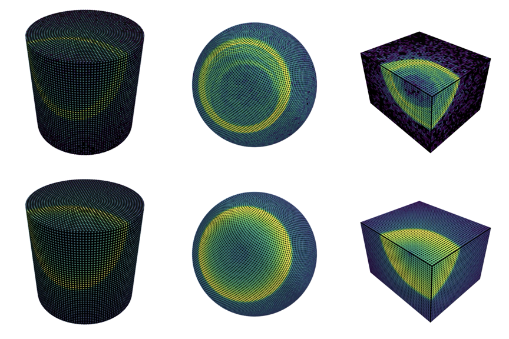

One differentiable hub
setup_event_simulator returns a JIT-compiled callable mapping
(source, detector params) → per-PMT charge & time. Everything downstream is
vmap/scan/jit.
JAX · differentiable · end-to-end
LUCiD is the first end-to-end differentiable optical detector simulator. Gradients flow through emission, propagation, scattering, and sensor response — so calibration and track reconstruction become gradient-based optimization in one framework.
Accompanies arXiv:2602.24129 · water-Cherenkov · WbLS · neutrino telescopes · units in m, ns, MeV

Per-PMT charge across six bundled geometries — one differentiable forward model.
setup_event_simulator returns a JIT-compiled callable mapping
(source, detector params) → per-PMT charge & time. Everything downstream is
vmap/scan/jit.
Cylinder (SK / HK / WCTE), sphere (JUNO), box, and neutrino-telescope strings (IceCube). Water, water-based liquid scintillator, and ice — sixteen configs ship in-tree.
A physics-informed sinusoidal network trained on GEANT4/PhotonSim photon tables stands in for GEANT4 inside the differentiable loop.
A shared Gauss–Newton engine (lucid.fitting) with Fisher /
Cramér–Rao uncertainties fits optical parameters and particle tracks alike.
Follow a photon from emission to per-PMT hits through the differentiable pipeline, then render the event.
Fit vertex, direction, and energy by gradient descent through the forward model with the Gauss–Newton engine.
Recover scattering, absorption, reflectivity, and QE — with Cramér–Rao error bars — from calibration sources.
pip installThe core install needs only JAX — no GEANT4 or PhotonSim — to simulate, calibrate, and reconstruct. The example emitter and photon tables download with one script.
Full quickstart →# core install — just JAX
pip install -e .
# example SIREN emitter + PhotonSim tables
./scripts/download_data.sh
# simulate your first event
python examples/hello_simulate.pyIf LUCiD helps your work, please cite the paper:
Alterkait, Jesús-Valls, Matsumoto, de Perio, Terao, End-to-end Differentiable Calibration and Reconstruction for Optical Particle Detectors, arXiv:2602.24129 (2026).
See CITATION.cff for machine-readable metadata.